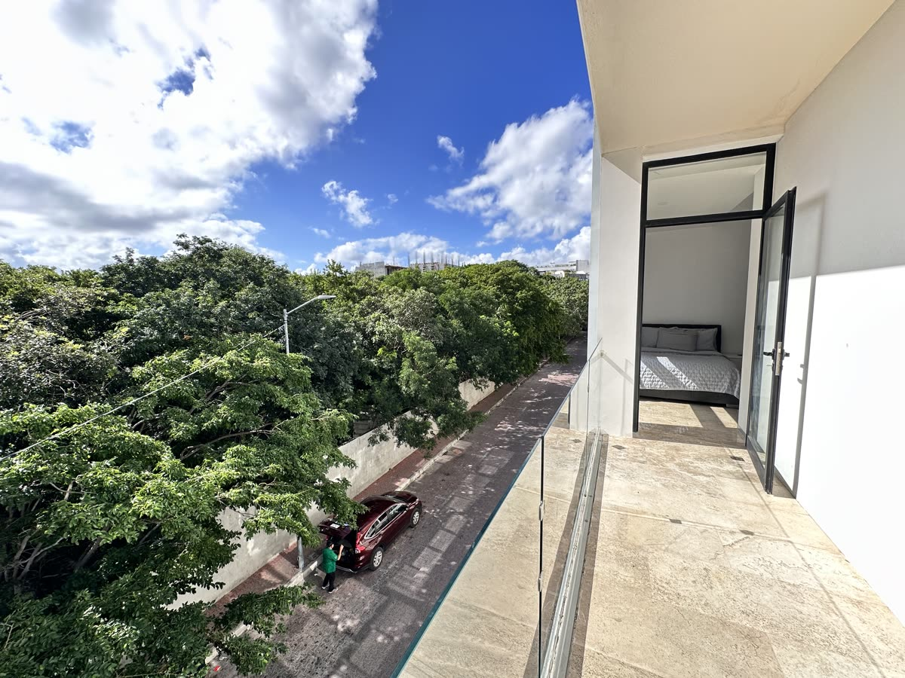

Auditoría de inventario · 09.08.2026
El inventario ya existe.
El recorrido todavía está fragmentado.
Dieciséis publicaciones se reparten entre chat, Canva, una carpeta general de Drive y subcarpetas por inmueble. Tania necesita conservar la variedad, pero convertirla en un enlace propio, bilingüe y fácil de actualizar.
La oportunidad en cuatro cifras
Suficiente inventario.
Demasiados puntos de entrada.
Diagnóstico con evidencia
Seis fricciones entre publicar
y poder comparar.
Se revisó el CSV fechado, la carpeta pública general de Drive, sus subcarpetas visibles y el enlace compartido de Canva. No se completaron campos mediante inferencias.
La asesora no cuenta con una URL propia verificable que reúna identidad, inventario, criterios de búsqueda y contacto directo.
En la propuesta: micrositio personal de Tania G.O. con una sola dirección compartible.
El CSV apunta las diez publicaciones de renta a una carpeta general y al mismo catálogo de Canva. El cliente todavía debe localizar la subcarpeta correcta o regresar a preguntar por el material.
En la propuesta: cada ficha identifica la propiedad y abre su subcarpeta cuando pudo verificarse.
Ejemplos observados: Menesse aparece en Drive con $38 mil y en el CSV con $37 mil; Emiliano estudio, $16 mil vs. $15.5 mil; Emiliano de una recámara, $18 mil vs. $17.5 mil; Ceren, $21.5 mil vs. $21 mil. Kumaru tiene subcarpetas entre $19 mil y $20.5 mil, mientras la publicación señala precio desde $17.9 mil.
Regla aplicada: el prototipo usa el CSV fechado como referencia y exige confirmar unidad y vigencia.
Monarca 28, Selvanova Coto 8, Xifra, Eight Condos, Mayan Monk y Selvanova Coto 6 tienen precio y recámaras, pero no URL de Drive, Canva o ficha externa dentro del CSV.
En la propuesta: permanecen visibles con placeholder explícito, sin reutilizar fotografías de otra unidad.
Hay una fecha de entrada, promociones julio–agosto, una disponibilidad “hasta 1 de enero” sin año, estancias mínimas, contratos de seis meses y varios registros sin fecha.
En la propuesta: cada estado viaja a la ficha y al mensaje; ninguno se presenta como disponibilidad confirmada.
Aunque existen carpetas y fichas con textos en ambos idiomas, el usuario salta entre herramientas y no conserva filtros, contexto ni una misma ruta de conversión.
En la propuesta: filtros, fichas, estados y mensajes de WhatsApp cambian entre español e inglés en la misma URL.
Scorecard editorial
La variedad suma valor.
La dispersión se lo resta.
Evaluación diagnóstica de la experiencia pública observada; no es una métrica de plataforma ni una auditoría jurídica.
Variedad de inventario7.0
Material visual verificable5.5
Claridad y vigencia3.5
Identidad y enlace propio2.0
Atribución de conversaciones1.5
3.9 / 10madurez digital pública estimada
Decisión de arquitectura
Micrositio con inventario.
No una landing individual.
La recomendación de una sola propiedad premium funciona cuando solo existe una ficha completa. Tania ya tiene dieciséis publicaciones comparables en sus campos esenciales.
Profundidad en una propiedad
- Perdería la mezcla renta / venta
- No resolvería los enlaces dispersos
- No aprovecharía las 16 publicaciones
Selección antes de conversar
- Filtros por operación y recámaras
- Una ficha contextual por registro
- Una sola URL en español e inglés
MVP propuesto
Tania G.O. + inventario.
Identidad y utilidad en la misma página.
El micrositio mantiene WhatsApp como canal de cierre y ordena todo lo que ocurre antes.
Perfil de asesora
Nombre, cobertura y contacto permanecen visibles sin depender del branding de otra plataforma.
16 fichas
Diez rentas y seis ventas con precio, zona, recámaras, estado y fecha fuente.
Filtros útiles
Operación, recámaras, búsqueda por zona o nombre y orden por precio.
ES / EN real
Interfaz, detalles, advertencias, formularios y WhatsApp en ambos idiomas.
Fuente responsable
Drive específico cuando se verificó; placeholder cuando falta material de la venta.
WhatsApp atribuible
El primer mensaje identifica propiedad, precio, operación y necesidad.
Prototipo funcional incluido
16 publicaciones · 4 categorías · renta desde $13 mil · venta desde $2.599 M
Regla de confianza
Mostrar la diferencia.
No esconderla.
El micrositio conserva los datos del CSV y convierte los huecos en preguntas para Tania. No toma el nombre de una carpeta como prueba automática de vigencia.
CampoEstado del MVP
Operación, propiedad, zona y precioEstructurado
Recámaras y publicación fuenteEstructurado
Servicios, mascotas y plazo de rentasReportado
Fotografías de siete rentasDrive verificado
Fotografías de ventasPendiente
Superficies y condiciones de ventasPendiente
Vigencia actual de las 16 opcionesPendiente
Ruta recomendada
Unificar ahora.
Operar con fecha después.
- 01
Confirmar identidad
Fotografía profesional, bio, zonas, marca personal, aviso de privacidad y forma de atribución.
- 02
Reconciliar precios
Alinear títulos de Drive, catálogo Canva y CSV; identificar la unidad exacta de Kumaru y Mayan Monk.
- 03
Completar ventas
Agregar fotografías, superficies, amenidades, mantenimiento y ficha fuente a las seis publicaciones.
- 04
Definir actualización
Una revisión semanal con estado disponible, apartado o cerrado y fecha visible.
Alcance y metodología
Qué se revisó.
Fuentes: CSV entregado con publicaciones del 5 y 6 de agosto de 2026; carpeta pública general de Drive y subcarpetas visibles por inmueble; enlace de catálogo Canva incluido en el CSV; brief de contacto y presencia digital.
No verificado: dominio personal, sitio propio, vigencia actual, documentos, superficies, inventario físico o condiciones contractuales. “No verificado” no demuestra que no exista.
Tratamiento visual: solo se usaron fotografías de subcarpetas cuyo nombre permitió relacionarlas con la propiedad. Las ventas sin fuente visual conservan un placeholder. No se contactó a Tania G.O.
Conclusión
Tania no necesita otro catálogo.
Necesita una capa que los ordene.
La oportunidad es alta porque el inventario y parte del material ya existen. El micrositio convierte esa dispersión en una selección bilingüe, trazable y lista para generar preguntas específicas.
Ver la propuesta aplicada ↗